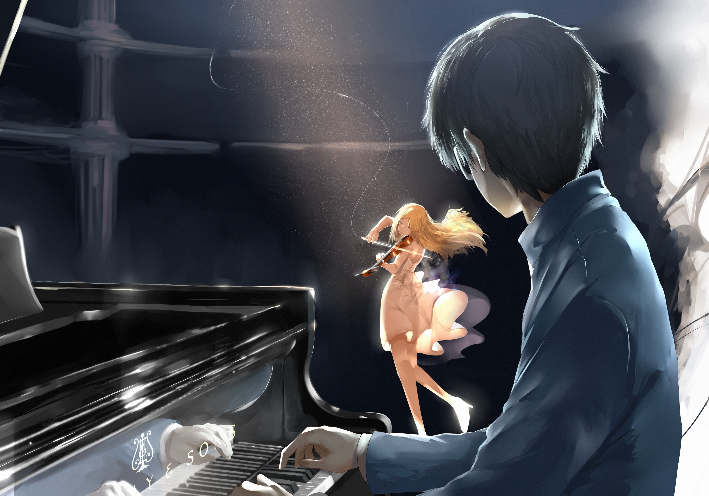

Hej, I'm 林啸堃
技能点都点在了奇怪的地方，
非典型工科生，喜欢整活。
How hard can it be?

关于我
教育经历
-
2020–2024
北京交通大学
-
2024 至今（截至 2026.11）
中国科学院计算技术研究所
电子信息 · 专业硕士
研究方向：集成电路物理设计自动化
个人爱好
-
体育
羽毛球、台球、F1、自行车
-
音乐
钢琴、编曲键盘、口琴
-
游戏
《CS2》、《欧洲卡车模拟2》等
-
其它
驾驶、摄影等
个人技能
OpenROAD、Cadence Innovus、Siemens Calibre、Vivado、Quartus Prime
C、C++、Python、Verilog
STM32、FPGA
Adobe Photoshop、Adobe Lightroom
妙妙工具
-
电脑
机械革命 耀世15Pro 2025
-
相机
SONY Alpha 6400
-
镜头
SONY E PZ 16-50mm F3.5-5.6 OSS | SELP1650
SIGMA CONTEMPORARY 16-300mm F3.5-6.7 DC OS
SIGMA ART 17-40mm F1.8 DC
-
乐器
YAMAHA YDP-143WH
学术成果
-
GNAR: Minimizing and Balancing Thermomechanical Stress for Multi-Chiplet Systems
研究如何降低并均衡多芯粒系统中的热机械应力，利用特定容错设计方法以提高系统可靠性
-
PI-Aware Co-Layer Signal Routing and Power Plane Synthesis for Chiplet Interposers
在芯粒中介层的同一物理层上协同规划和设计信号布线与电源平面
-
CIT-Bench1.0: Open-Source Benchmark Suite for Chiplet-based Advanced Packaging
构建面向芯粒（Chiplet）先进封装设计自动化的开源基准套件，涵盖封装规划、芯粒布局与凸点布局
IEEE Xplore -
N for One: Reticle-Reuse-Driven Routing for Silicon Interposers
硅中介层布线工具 CIT-R3，同时优化掩模版复用目标与布线质量
ACM Digital Library -
GPU/ML-Enhanced Large Scale Global Routing Contest
Honorable Mention
竞赛结果